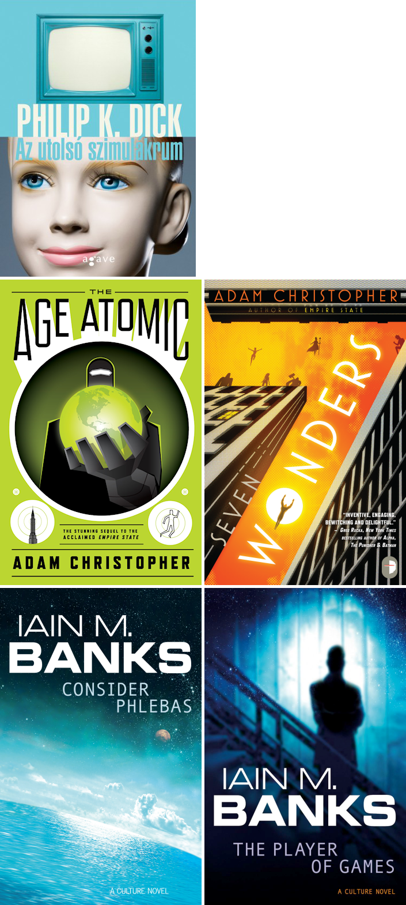
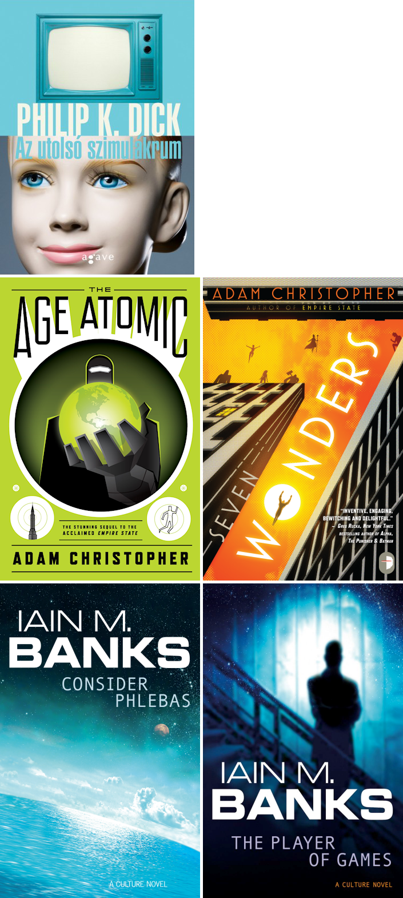

Rendeltem, illetve vettem egy kiló könyvet.

Szó szerint, egy kilót.
Rendeltem, illetve vettem egy kiló könyvet.

Szó szerint, egy kilót.
“[…] The Empire State exists in isolation. There is nowhere else but the Empire State. The Empire State is all.”
– Adam Christopher: Empire State
Jó kis sci-fi.
https://www.youtube.com/watch?v=Jv8MM9ffK0c

A Syndicate Warsban a hirdetőtáblákon többek között a Ghost in the Shell trailere futott. Cyberpunk at its best!
https://www.youtube.com/watch?v=xh0tStI2Xfw
https://www.youtube.com/watch?v=ewwtznVkSxA
Kommentben megígértem, hogy kiegészítem a posztot, de inkább csak kiteszem ide a kommentek releváns részeit.
Írta: Red 2012. április 25. 10:14
Hogy lemaradtam erről… Kicsit rossz szájízem van, hogy FPS-t csináltak belőle, de kíváncsi lennék rá, lehet, hogy beszerzem majd Xbox-ra.Írta: szantaii 2012. április 25. 11:06
Én is így voltam vele. Jobban örültem volna valami stratégiai játéknak. Az FPS-ek (1-2 kivételtől eltekintve) már nemigazán kötnek le. Viszont ez elég ütős lett, jól visszaadja a régi hangulatot, persze azért sok minden hiányzik is belőle.
Van ez a Skrillex gyerek meg még 1-2 DJ [ejtsd: diddzséj :)], akik remixelték a régi zenéket ehhez az új játékhoz, és habár nem vagyok dubstep fan, mégis jók lettek.
[…]
[…]
– Dehogynem – szólt közbe Nick. – Amikor adunk, kapunk is. Adunk valakinek valamit, később majd viszonozza és ő ad valamit. Ez világos, mint a nap.
– Ez nem önkéntes adás, ez barter. Hallgasd. „Isten azt mondja…”
– Isten halott – mondta Nick. – Megtalálták a tetemét 2019-ben. Az űrben lebegett az Alfa közelében.
– Egy olyan organizmus maradványait találták meg, ami több ezerszer fejlettebb volt nálunk – pontosított Charley. – És valószínűleg tudott lakható világokat teremteni, és benépesíteni azokat élőlényekkel, amiket magából származtatott. Ez azonban még nem bizonyítja, hogy ő volt Isten.
– Szerintem az volt.
[…]
Philip K. Dick: A Frolix-8 küldötte
Eddig a legrosszabb PKD, amit olvastam. Mondjuk ez a részlet isteni. :)
A lényeg 3:35-től hallható.
https://archive.org/details/PhilipKDickSpeechExcerpts
Egy rövid részlet a Mátrix című filmből:
INT. HOTEL LAFAYETTE (MATRIX) - DAY
Light filters down the throat of the building through a
caged skylight at the top of the open elevator shaft.
Four figures glide up the dark stairs that wind around
the antique elevator.
Neo notices a black cat, a yellow-green-eyed shadow that
slinks past them and pads quickly down the stairs.
A moment later, Neo sees another black cat that looks and
moves identically to the first one.
NEO
Whoa. Deja vu.
Those words stop the others dead in their tracks.
INT. MAIN DECK
The monitors suddenly glitch as though the Matrix had an
electronic seizure.
TANK
Oh, shit! Oh, shit!
INT. HOTEL LAFAYETTE (MATRIX) - DAY
Trinity turns around, her face tight.
TRINITY
What did you just say?
NEO
Nothing. Just had a little deja
vu.
TRINITY
What happened? What did you see?
NEO
A black cat went past us and then
I saw another that looked just
like it.
TRINITY
How much like it? Was it the same
cat?
NEO
It might have been. I'm not sure.
Trinity looks at Morpheus, who listens quietly to the
rasping breath of the old building.
NEO
What is it?
TRINITY
A deja vu is usually a glitch in
the Matrix. It happens when they
change something.
She also listens as the staccato BEAT of HELICOPTER
BLADES GROW ominously LOUDER.
INT. MAIN DECK
Tank sees what was changed.
TANK
It's a trap!
Philip K. Dick We Can Build You című regénye Az elektromos Lincoln címmel megjelent magyar nyelven.

A fenti kép bizonyítja, hogy a regény nem fikció. Lincoln él.
Az alábbi oldal 1933 júliusában jelent meg a Popular Science című folyóiratban. Kíváncsi vagyok kinek mi jut erről eszébe. Nekem egyből az ugrott be, amit a kép alatt olvashattok. Egyébként tudom, hogy a dime tíz cent, szándékosan írtam ötöt. Olvassátok végig a bejegyzést, és rájöttök, hogy miért.

[…] Visszament a konyhába, végigkutatta összes zsebét egy tízcentes után, s mikor végre talált, beindította vele a kávéfőzőt. Beszippantva a számára teljesen szokatlan illatot, megint az órájára nézett, és meglátta, hogy letelt a negyedóra. Élénken az ajtóhoz lépkedett hát, elfordította a gombot, és kioldotta a zárat.
Az ajtó nem nyílt ki.
– Öt centet kérek – szólalt meg helyette.
Átkutatta a zsebeit. Nem talált több érmét, semmit. – Holnap megadom – mondta az ajtónak. Ismét nekifeszült a gombnak, az azonban meg se moccant. – Azt, hogy fizetek neked, egyedül a nagylelkűségemnek köszönheted – győzködte. – Senki sem kötelez rá.
– Én nem így gondolom – felelte az ajtó. – Nézzen csak bele a szerződésbe, amelyet aláírt, amikor megvette ezt a lást (sic!).
Az asztalfiókban rábukkant az okmányra. Aláírása óta sokszor idézett már belőle, különböző érveit alátámasztandó. Affene: az ajtónak a nyitódásért és csukódásért kötelező fizetség jár. Nem borravaló. […]
Philip K. Dick: Ubik
(…)
Ezért szeretem az SF-t. Olvasni is, írni is. A sci-fi író nem csak lehetőségeket lát meg, hanem vad lehetőségeket. Nem egyszerűen abból indul ki, hogy „Mi lenne, ha…”, hanem abból, hogy „Te jó Isten, mi lenne, ha…” Téboly és hisztéria. Jönnek a marslakók. Egyedül Mr. Spock nyugodt. Ezért lett amúgy Spock akkora kultuszfigura; segít megnyugodni a káoszban is. Ellensúlyozza az SF-írók hajlamát a lehetetlen ötletek elképzelésére.
KIRK (őrjöngve): Spock, mindjárt felrobban az Enterprise!
SPOCK (higgadtan): Negatív, kapitány; csak meghibásodott egy biztosíték.
Spocknak mindig igaza van, akkor is, ha éppen téved. A hanghordozása, a természetfeletti józansága; ő nem olyan ember, mint mi; ő egy isten. Isten beszél így; ezt mindenki ösztönösen megérzi. Ezért van az hogy Leonard Nimoy a narrátora az áltudományos tévéműsoroknak. Nimoy képes bármit hihetően előadni. A kutatás folyhat egy elveszett gomb vagy egy elefánttemető után, Nimoy lazán elcsendesíti minden kétségünket és félelmünket. Elfogadnám pszichoterapeutának; a hajamat tépve rohannék be hozzá, a szokásos őrült marhaságaimmal, és ő megszabadítana ezektől.
PHIL (eszét vesztve): Leonard, ránk zuhan az ég!
NIMOY (higgadtan): Negatív, Phil; csak meghibásodott egy biztosíték.
És máris rendbe jönnék, helyreállna a pulzusom, és folytathatnám a munkát a regényemen, amivel a határidőhöz képest már három év lemaradásban vagyok.

Remélem feltűnt valakinek a kapcsolat a mai bejegyzésem és az egyik múltkori között. Történetesen a Blade Runner alapjául is egy Philip K. Dick regény szolgált alapul. Ugyan nagyban átírták, hogy filmre lehessen vinni. Sokaknak emiatt nem tetszett a film, de nekem igen. Én az Álmodnak-e az androidok elektronikus bárányokkal? című könyvet és a Szárnyas fejvadász (ez a címet is, hogy sikerült összehozni?) című filmet külön kezelem. Két külön alkotás, az egyik épít a másikra, de attól még nem lesz kevesebb. Az a helyzet, hogy most nem is igazán ezzel akarok foglalkozni, hanem a posztcímben szereplő másik Philip K. Dick regénnyel.

A regény főhőse Bob Arctor, aki beépített zsaru és a „kábítószer-elleneseknél” van. A maszkafandernek hála munkahelyén sosem lehet felismerni, Fred nem tárhatja fel kilétét. Feladata, rábukkanni a rendkívül káros H-Anyag nevű drog rejtélyes forrására. Az utcán, Fred, azaz Bob egy sima drogos, aki lassan a dílerkedés felé veszi az irányt, hogy a szervet még több használható információhoz juttassa. Eközben maga is a H-Anyag fogyasztójává válik, és ez bizonyos mellékhatások kialakulásához vezet.
Egyik nap Fred egy érdekes megbízást kap maszkafanderes főnökétől, Hanktől: ezentúl Bob Arctort, a drogdílert kell majd megfigyelnie és jelentenie róla. Bob, haverjaival él együtt saját házában. Gyakorlatilag egyik-napról a másikra felborul Bob jól megszokott élete. Lassan úrrá lesz rajta a paranoia. Attól tart, hogy valaki figyeli őt és a barátait. Bob senkiben nem bízik, kifordul önmagából, és jönnek a legvadabb haluk, amit csak el lehet képzelni.
A maszkafanderes Fred kénytelen a teljesen őrült Arctort nézni a megfigyelés során felvett szalagokon. Undorodik Arctortól és társaitól, akiken vég nélküli csevejt folytatnak a száznyolcvan centis hasistömbről, akit ha felhúznak, akkor simán átsétál a mexikói határon, vagy épp az eszkimók vadásszák le. Fred lassan kiég, kiborítja, amit lát. Fogalma sincs, hogy saját magát nézi, amint be-betépeget haverjaival és szedi a H-Anyagot.
Dick rendkívül kemény képet fest ebben a regényben. A valóság, a nem valóság, a humor, az őrület és a teljes leépülés világa ez. Nehéz egy utazásra viszi az olvasót. Amíg ezt olvastam én is utaztam Arctorral és társaival.
Érdemes elolvasni a szerző rövid jegyzetét a regény végén, megrázó. Nagyon durva összefoglalást kapunk. Mindenkit arra bíztatok, hogy olvassa el ezt a könyvet, utazzon, játsszon, ugyanakkor gondolkozzon el azon miről is szól ez az egész. Pokoli jó.